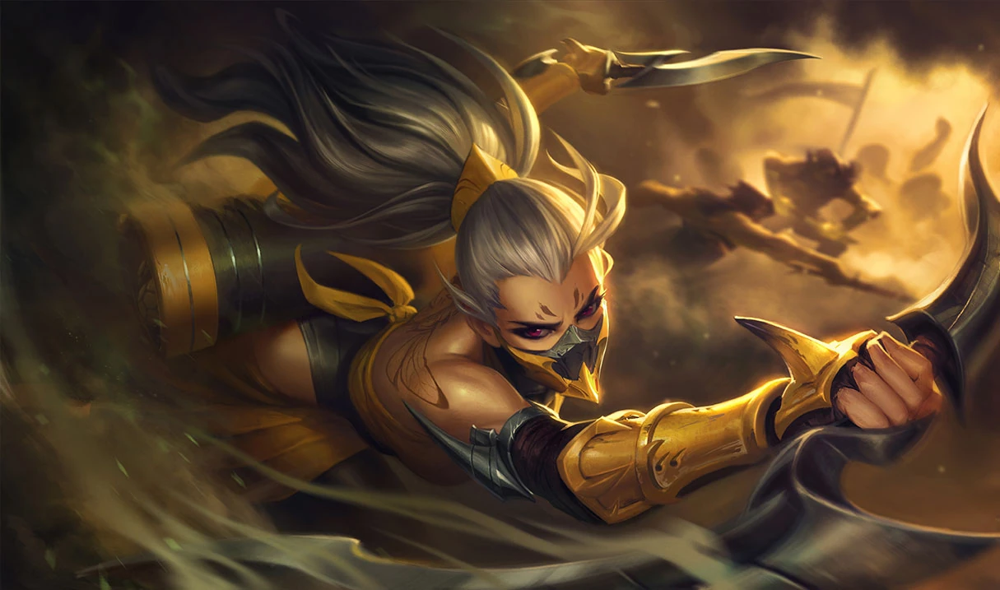
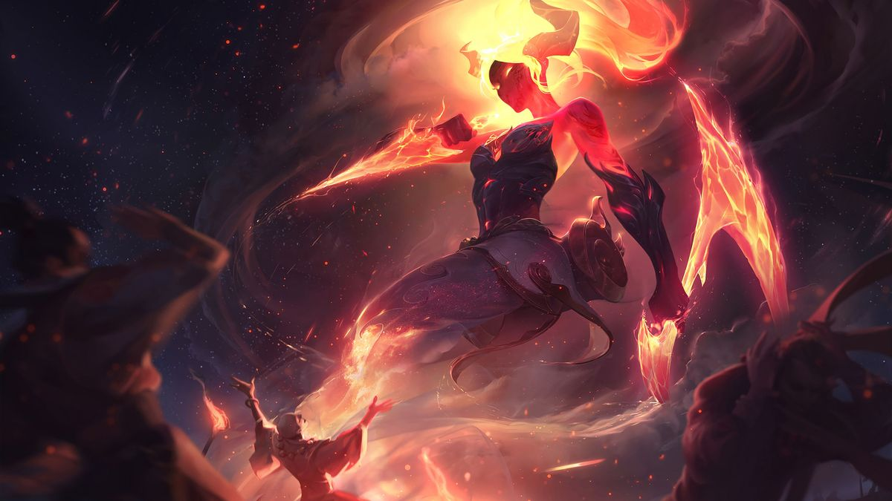
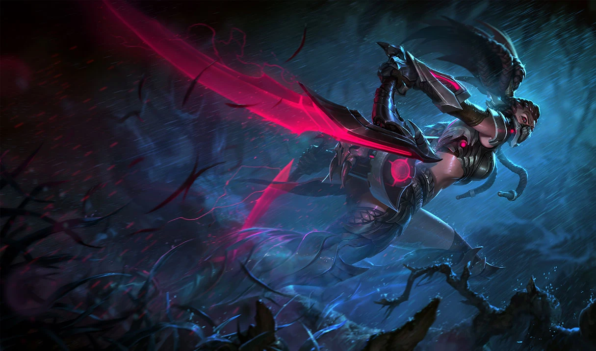
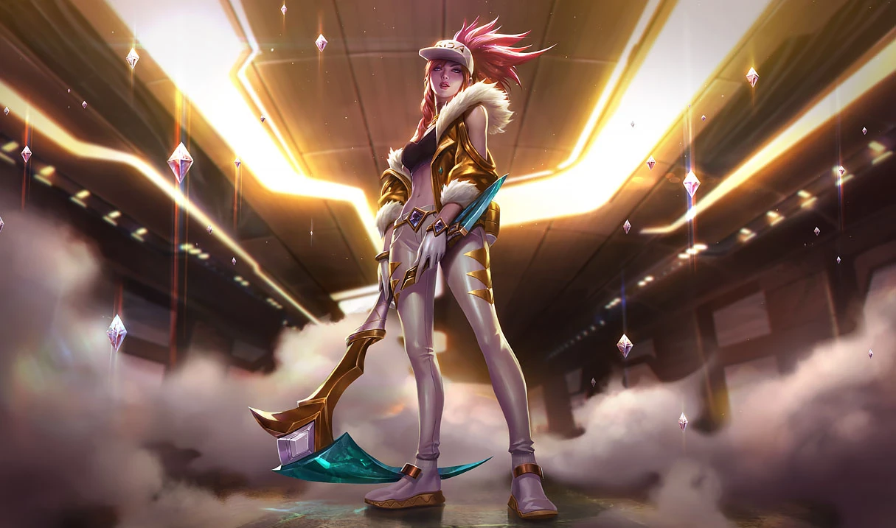
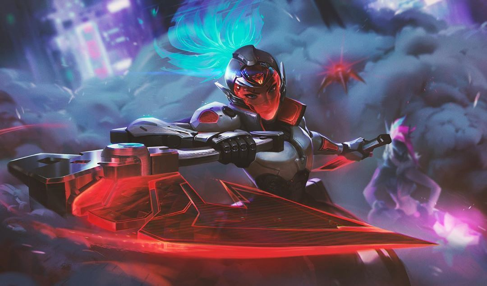

Biografia de Akali
AKALI
La Asesina Furtiva
Jonia siempre ha sido una tierra de magia salvaje, llena de gente enérgica y espíritus poderosos buscando vivir en armonía. Pero, algunas veces, este pacífico equilibrio no resulta sencillo. De vez en cuando necesita mantenerse bajo control.
Los Kinkou son los guardianes autoproclamados del sagrado balance jonio. Los acólitos leales de la orden deambulan en los reinos materiales y espirituales, mediando los conflictos entre ellos, solo haciendo uso de la fuerza cuando es estrictamente necesario. Nacida entre sus filas se encontraba Akali, hija de Mayym Jhomen Tethi, la prestigiosa Puño de la Sombra. Mayym y su pareja, Tahno, criaron a su hija dentro de la Orden Kinkou bajo el atento liderazgo del gran maestro Kusho, el Ojo del Crepúsculo.
Cada vez que sus padres se ausentaban, otros miembros de la orden asumían el papel de familia sustituta para Akali. Kennen, el Corazón de la Tempestad, pasó muchas horas con la joven, enseñándole técnicas y destacando la velocidad y la agilidad sobre la fuerza. Akali era una chica precoz y absorbía todo el conocimiento como una esponja. Para todos era muy evidente que ella seguiría el camino de sus padres, junto con Shen, el hijo del gran maestro y sucesor designado. Ambos liderarían una nueva generación dedicada a preservar el balance en Jonia.
Pero el balance puede ser efímero. La orden se vio dividida.
Zed, un acólito descarriado, volvió y se enfrentó violentamente a Kusho, arrebatándole el poder en un sangriento golpe de estado. Akali huyó hacia las montañas del este junto con Mayym, Shen, Kennen y algunos acólitos más. Por desgracia, Tahno no era uno de ellos.
La transformación de los Kinkou en la despiadada Orden de la Sombra, provocada por Zed, estaba casi completa. Pero, como el nuevo Ojo del Crepúsculo, Shen pretendía reconstruir lo que se había perdido. Retomarían las tres filosofías fundamentales de los Kinkou: la imparcialidad pura de Observar las Estrellas, la promulgación del criterio al Recorrer el Sol, y la eliminación del desequilibrio al Podar el Árbol. Pese a que ahora eran pocos miembros, entrenarían a neófitos para restaurar e incrementar sus números.
Cuando Akali alcanzó la edad de catorce años, inició formalmente su entrenamiento Kinkou, determinada a ser la sucesora de su madre y adoptar el título de Puño de la Sombra.
Era una luchadora portentosa y logró dominar el kama, una hoz de mano, y el kunai, una daga arrojadiza. Aunque no poseía las habilidades mágicas de sus compañeros acólitos, demostró ser digna del título, lo cual, con el tiempo, le permitió a su madre dimitir y entrenar a los jóvenes neófitos.
Pero el alma de Akali era incansable y sus ojos estaban abiertos. Si bien los Kinkou y la Orden de la Sombra habían llegado a un inquietante acuerdo a raíz de la invasión noxiana en Jonia, ella podía ver que su tierra natal seguía sufriendo. Akali se cuestionó si verdaderamente estaban cumpliendo con su propósito. Podar el Árbol suponía eliminar a aquellos que atentaran contra el balance sagrado... pero Shen siempre instaba a la moderación.
Él la refrenaba. Todos los mantras y las meditaciones tranquilizaban su espíritu, pero esas trivialidades no conseguirían derrotar a sus adversarios. Su precocidad juvenil resultó en completa desobediencia. Discutió con Shen, lo desafió y acabó con los enemigos de Jonia a su propia manera.
Delante de toda la orden, declaró la incapacidad de los Kinkou, alegando que su discurso de balance espiritual y paciencia no bastaban. Los jonios estaban muriendo en el reino material y ese sería el reino al que Akali defendería. Ella había recibido entrenamiento como asesina. Iba a ser una asesina. Ya no necesitaba a la orden.
Shen la dejó ir sin enfrentarla, sabiendo que este era un camino que Akali debía recorrer por su cuenta. Probablemente ese camino la traería de vuelta algún día, pero eso tendría que decidirlo ella.
Skins de Akali

Akali Aguijón

Akali Infernal
Akali Supercampeona
Akali Enfermera
Akali Luna de Sangre
Akali Colmillo de Plata

Akali Cazadora de Cabezas
Akali sashimi
Akali K/DA

Akali K/DA Prestigiosa

Proyecto: Akali
HISTORIA CORTA
SALIENDO DE WEH'LE
POR MICHAEL MCCARTHY
"Ah... !Oye¡ !Bo'lii¡", grito."Me cortaste de más ¿No crees?"
LEER HISTORIAHISTORIA CORTA
EL ARCO Y EL KUNAI
POR JOEY YU
El aire del sur de Shon-Xan estaba lleno de magia pura. El poder místico inundaba todo el territorio, brotaba a través de árboles iridiscentes cuyas hojas magenta, índigo, celeste y ámbar crecían hacia el cielo y se abrían como abanicos en manos de danzantes.
LEER HISTORIA